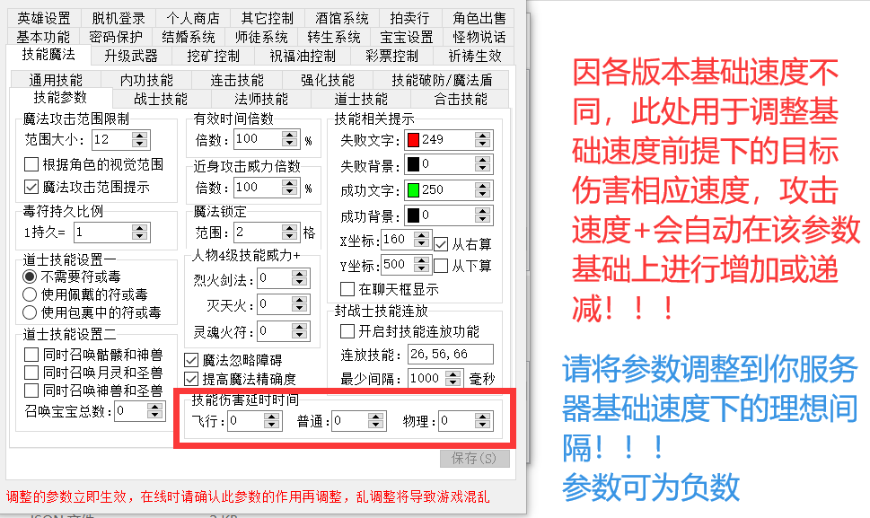
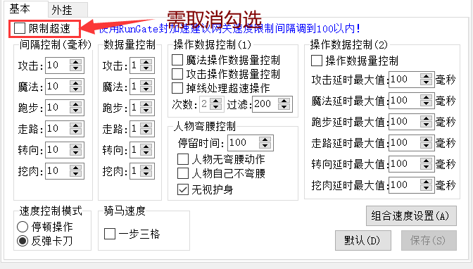

游戏速度延时说明(因图片过大，看不到图请使用F5刷新)：
针对不同版本进行自定义调整游戏延时至满意状态
位置：选项 - 功能设置 - 技能魔法 技能伤害延时时间
说明：因市面上各种速度的服务端种类很多，该参数为调整游戏中基础速度，当游戏中出现攻击速度+，引擎将在基础值上自动减少对应参数
飞行： 如灵魂火符 火球术
普通： 如雷电术 五雷轰
物理： 砍击均为物理
图解：

以上为在你游戏的基础速度上进行调整（正常游戏速度、无任何加速属性），参数越大延时越长，负数越大越提前，用户根据自己游戏将参数调整至满意值
通常情况下游戏攻击速度越快的服负值越高，如超快速的无限刀可以设置-250左右 ，复古服可以0或100，具体根据自己喜好测试并调整参数到满意值
;===================================================
位置：选项 - 性能参数
推荐值： 点击默认设置后 将数据块大小修改为 8000 自检数据块 设置为20000 （当然还可以继续翻倍），数据发送过大的服务端可以勾选“数据压缩后发送到网关”
PS：何为数据过大？什么情况下需要勾选“数据压缩后发送到网关” ？ 答案就是 当引擎界面下方网关链接信息中频繁出现大额队列数据时就需要勾选“数据压缩后发送到网关”
怪物处理控制 - 处理间隔 复古服一般默认200左右即可，攻击速度超快的服可以设置为50左右或最低值，具体根据自己游戏基础速度来攻击怪物进行视觉判断来调整至最佳状态（数值越低CPU使用相对越高）
图解：
;===================================================
位置：选项 - 怪物设置
怪物后仰：
自定义怪物被攻击后仰延时时长，通常默认值即可，个别无限刀（超快速度）的服可以调整此参数来降低怪物后仰时间，数值越大后仰时间越长...
图解：
;===================================================
位置：选项 - 参数设置- 游戏速度
此处参数为限制游戏速度，设置游戏速度在选项-客户端设置-速度控制中
网关限速说明：使用网关封速需关闭引擎的速度限制，各项速度限制的参数改为10，然后取消“限制超速”选项。
如下图
图解：

然后打开组合速度限制，取消里面所有勾选
总结：以上各参数设置选项，用户根据自己服的游戏速度使用参数将延时调整至最佳状态